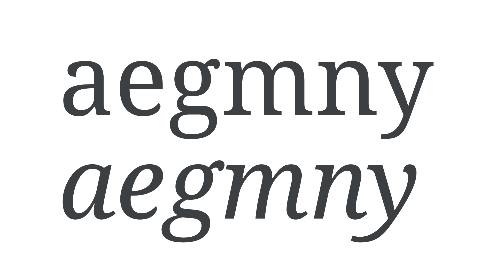

Italic
By Google Fonts Knowledge contributors · Google Fonts Knowledge.
Original article · Source on GitHub · CC BY-SA 4.0. Text, illustrations and existing credits reproduced from the licensed Knowledge repository. Open Shelf adapted the layout and links; these adaptations are also CC BY-SA 4.0. No endorsement implied.
Italic is a type style that's almost always slanted and is designed to create emphasis in text. Originally based on semi-cursive forms, italics are a direct contrast to the upright style.
Unlike obliques, which are slanted versions of the upright forms, italics have a different structure informed by cursive handwriting—with their own nuances. Some italics differ wildly from their roman counterparts, such as those in Bodoni Moda, IBM Plex Serif, and Source Serif 4.

When true italics (or true obliques) are not available, software may render “faux“ italics, which—like faux bolds and faux small-caps—should always be avoided.